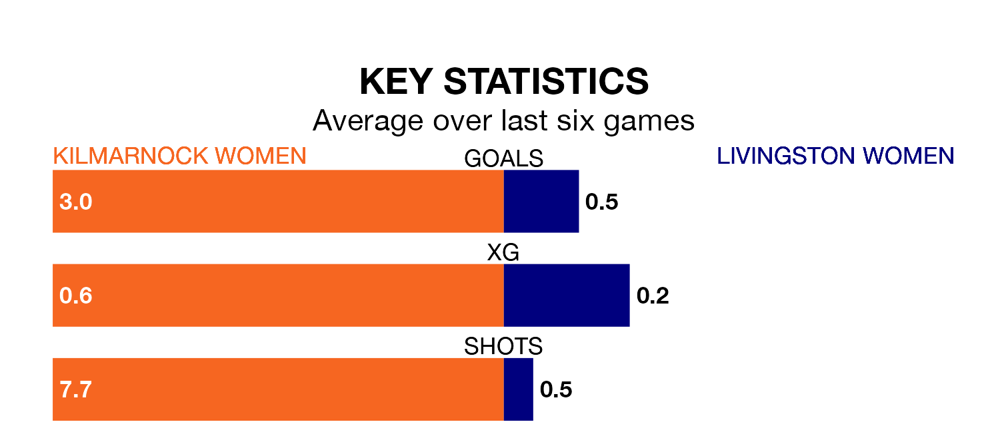

Two of SWPL 2's top sides face each other at the BBSP Stadium Rugby Park in Sunday's early kick-off, when second-placed Kilmarnock Women host third-placed Livingston Women.
Kilmarnock have picked up 12 wins and four draws from 21 games so far this season, and sit seven points above the visitors going into the 2pm match.
Livingston, meanwhile, have won 10 and drawn three, picking up 33 points.
With 54 goals in 21 games so far this season, Kilmarnock are the league's second-highest scorers with 2.6 goals per game. And they are conceding fewer than average, letting in 28 goals at a rate of 1.3 per game.
Livingston, meanwhile, are below average scorers, with 1.6 goals per game, compared to a league average of 1.9. They have conceded 1.5 goals per game.
The hosts are in good form in SWPL 2, with four wins and a draw from their last six games.
With a win and a draw over that period, the away side's form is much worse – they have taken four points from 18, compared to Kilmarnock's 13.
In the last three years, Kilmarnock and Livingston have played each other on three occasions. Kilmarnock won two of them and Livingston one.
Their last meeting was on January 21, when Livingston won 1-0 at home.
Kilmarnock's last match was on March 17, a 3-2 win against St. Johnstone Women, with getting the goals for Kilmarnock.
Livingston beat Stirling University Women 2-1 last time out, also on March 17, with on the scoresheet.
Updated: 10:31 (UTC), 31/03/24